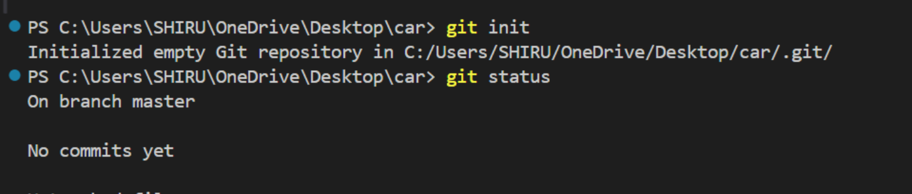

Git is a version control system.
A version control system is a software tool that helps to track and manage changes to files,
code, documents, and any other types of digital content over time.
In software engineering, git helps us to keep track of changes to code.
It is also used to collaborate in code by several software engineers.
Git was developed by Linus Torvalds(Creator of Linux).
Git is not the only type of Version Control System, other examples include
CVS, Subversion or Perforce but for now try and forget about them, this will help you
avoid subtle confusion when using the tool. Understanding the fundamentals of how Git works
makes it easier for a beginner to work with git effectively cause today our focus is on Git and Github.
Installing Git.
Your operating system does not come with git installed by default (especially windows operating system).
To check if you have git installed in your machine or not:
Open the command prompt in windows or terminal in linux/macos.
Type the command git --version.
Press Enter.
If you have git installed, you should see something like: git version 2.30.2.windows.1.
Example of git version installed
If not, then you will see an error message that the command is not recognized.
No git version installed
If you don't have git installed, head over to https://www.git-scm.com/
and download git from there.
You will be able to see the latest version of git available. Click the download buttton for your specific operating system
(macos or windows) for git to be downloaded.
Wait for the downloading process to end and setup git into your machine.
Click download
Configuring Git.
Now that the downloading and installation process is complete,
the next procedure is to configure your git.
Let Git know who you are. This is an important step after installing git as each git commit uses this information.
To let git know who you are, you pass in the username and email address.
To configure your username:git config --global user.name “your username”
To configure your email address: git config --global user.email “your email address”
Best advise is to use your github email address or if you don't have a github account,
use an email address that you will use to sign up for github.
Email and Username configuration
Intializing a Git repository
Git repository- It is a central storage location for managing and tracking changes in files
and directories. Checking if a project contains a git repository is very important to avoid reinitializing a git repository
where there is already one which is a bad practice in git.
To check if the project contains a git repository,
run the command git status.
If the project does not contain a git repository, you will get the message “fatal not a git repository…”
Any other message means that the project contains a git repository.
If the project/folder does not contain a git repository, you can initialize/create a repository using the command git init
If a repository is initialized successfully, you will see the text “Initialized an empty git repository in…”

Checking and creating repository
Adding files to the staging area
After creating a repository it appears empty.Next step is to create a file inside the folder where you initialized git.
Use the command git status to verify that the file is part of the repo.
You will see your file under untracked files.
This means that Git is aware of the file but it has not added it to our repository.
Files in your github repository can be in one of the two states:tracked or untracked.
Tracked files:Are files that git knows about and are added to the repository.
Untracked files:These files are in our working directory and git knows about them but have not been added to the repository.
In the example below, after creating a file and checking if it is part of the repository by using git status,
we see that dealership file is untracked.
Example of untracked file
Staging Environment/Area
Now that we have an instance of untracked file, we have to add it into the repository.
This is done through the Staging Environment/Area. A Staging Environment/Area is an area where changes to files are prepared before they are committed to repository.
To add a file to the staging environment, use git add filename.
If you have more than one file, you can specify those files:git add file1 file2 file3
If you want to add all the files in the project, instead of specifying those files, use a period symbol; git add .
You can also use git add --all to add all the files.
The shortcut for git add --all is git add -A
Untracked file added to the repo
Commiting changes
A commit in git is a snapshot of changes made to a repository at a particular point in time.
Adding commits keeps track of progress and changes as we work.
Git considers each commit change point, it is a point we can go back to in our project
if we find a bug or we want to make a change.
We use git commit -m “commit message” to commit changes to our repository.
The commit performs a commit
The -m “message” adds a message.
Another option to view past commits is by using the git log command.
We can also use git log --oneline if we want a bit more compressed output of git log.
Committed file that was added to the repo
Branches
A branch is a new or separate version of the main repository.
Branches allows multiple developers to;
Work on different features.
Fix bugs.
Experiment simultaneously without interfering with each other's work.
Creating a branch
To create branch, we use the command git branch new-branch-nameNew branch created
Viewing all branches
We can then view all the branches we have using the command git branchAll branches available
Switching active branches
The branch with a * symbol to its left is the active branch/the branch we are in We can change branches using the command git checkout branch-nameBranch switched from the main branch
Merging a branch
Once you finish working in your branch and you are comfortable that is what you want,
we merge this branch to the master branch/ the main branch.
The master branch typically contains the latest version of the codebase.
It is here where all finished and tested features are integrated.
To merge a branch;
Add all the changes made in that branch to the staging area, then commit those changes.
Move to your master/main branch/the branch you want to merge this branch with.
Then use the command git merge branch-name to merge that branch.
If we want/and are sure, we can then delete that branch using the command git branch –d branch-name
Merged branch
Deleting a branch
You can delete a branch using the command git branch -D branch-nameDeleted branch
The Next step
After trying all the above, I would recommend Git users to also interact with Github. Github is a web based platform for hosting and collaborating on Git repositories.
Github allows users to;
Host Git repositories on it's platform
Store their codes on github
Collaborate with other developers from all over the world.
You can sign up for a free personal github account at https://github.com/.
All you need is an email address.
Other recommendation include;
How to pull requests
How to push request
Git commands
Once you have all this in your finger tips you are good to go. All you need is to keep practicing
to ensure you not only prevent yourself from forgetting what you have learnt but also be able to learn new techniques you can apply
in the long run.
I hope this has helped you and given you a glimpse of what git and github is and how to navigate through it.